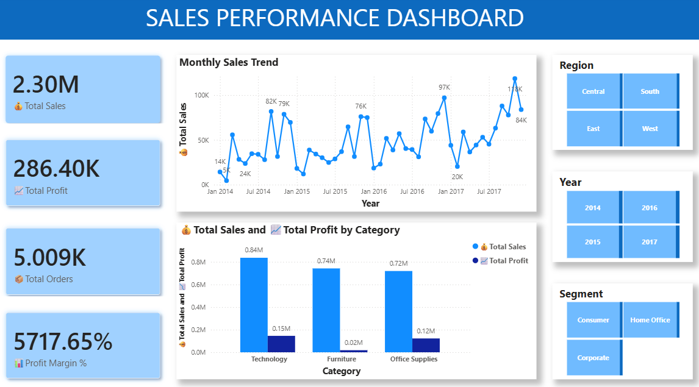
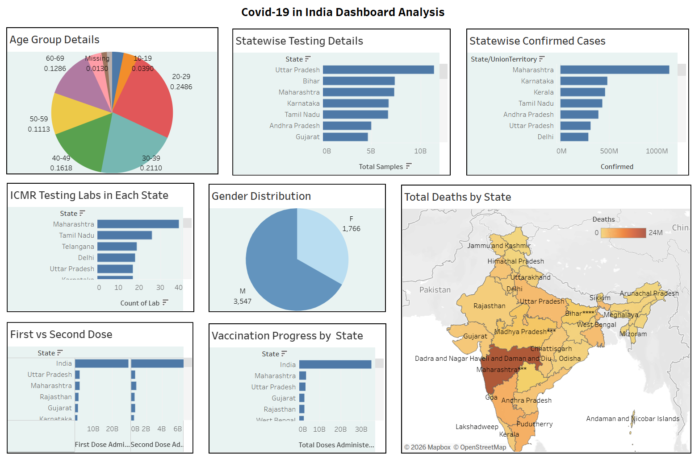
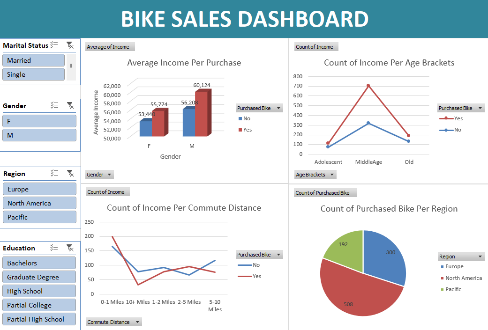

Drone Fleet Operations Dashboard
Power BI dashboard on 554 cleaned flight records, surfacing which drone models drive most failures and flight-time patterns by size.

HR Analytics Dashboard
Four-page Power BI report on the IBM HR Attrition dataset with a dedicated DAX measures table.

Sales Performance Dashboard
Power BI dashboard on the Sample Superstore dataset with KPI cards, a date table, and dark-themed slicers.

COVID-19 India Dashboard
Tableau Public dashboard built from seven Kaggle datasets tracking India's COVID-19 spread.

Bike Sales Dashboard
Excel dashboard breaking down bike sales by age, income, commute distance, and region, with slicers.

Olist E-Commerce Sales & Delivery Dashboard
Excel star-schema model across 7 linked tables, with Power Query cleaning, DAX measures, and 4 PivotCharts.
AI-Powered Data Cleaning Assistant
Python tool that profiles a messy retail dataset, sends issues to an LLM for